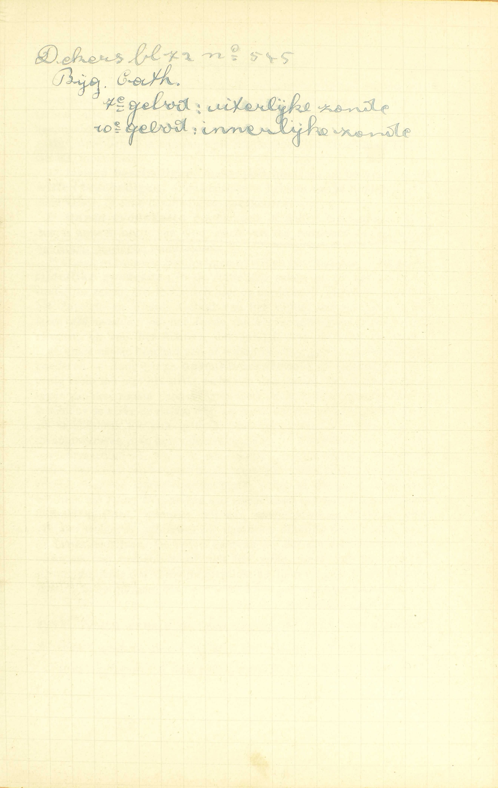
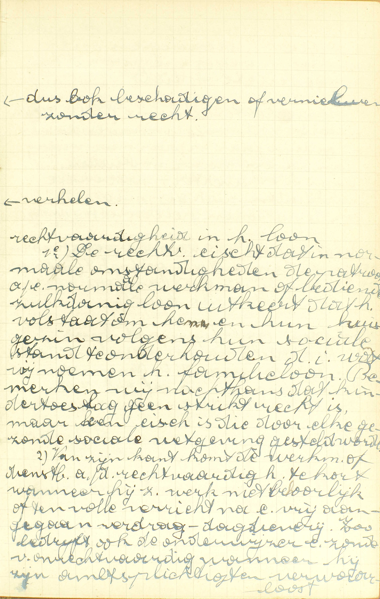
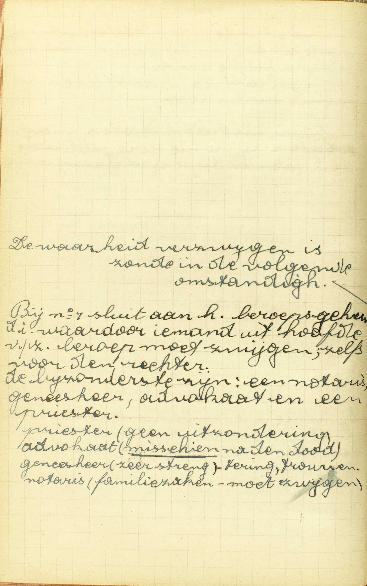
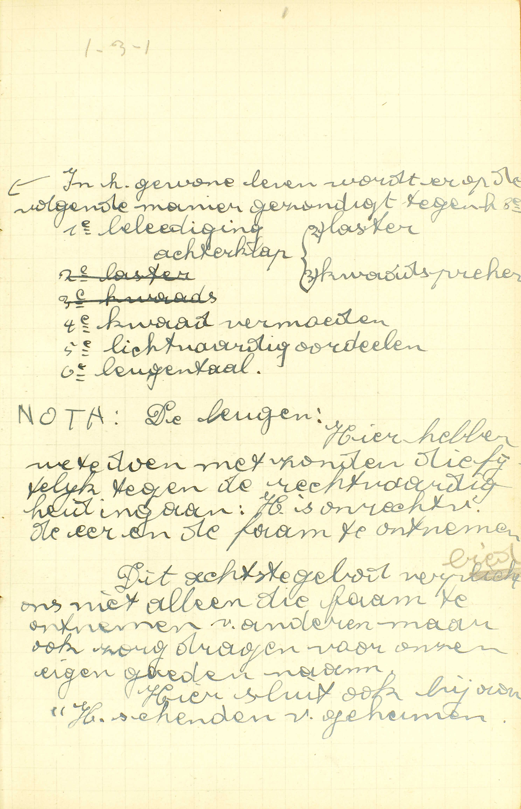
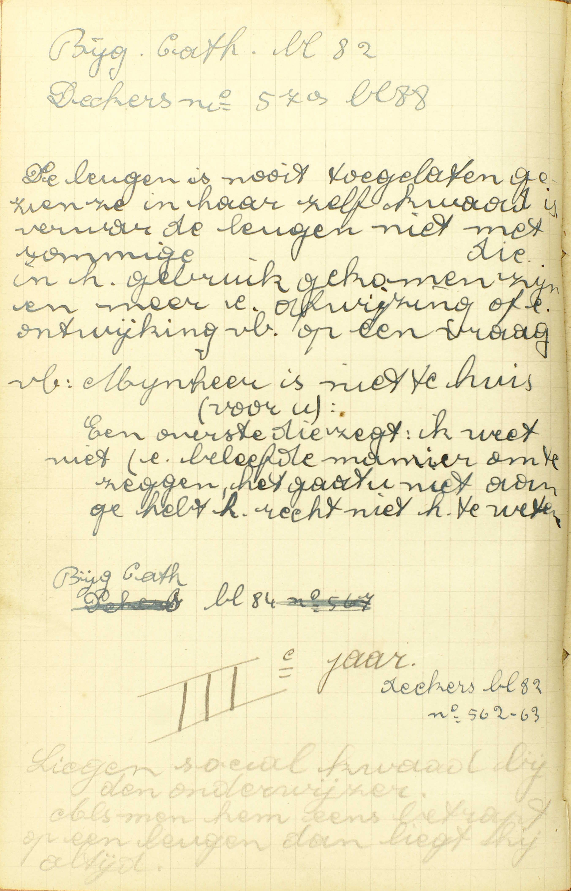

BEKNOPTE VERKLARING
van de
MECHELSE CATECHISMUS
ten gebruike van het middelbaar onderwijs
DERDE DEEL
–
ZES EN TWINTIGSTE LES
Van het Zevende, Achtste en Tiende Gebod
|
Wacht van stelen en onrechtvaardig leven. Begeert niemands goed, ’t zij klein of groot |
Zonden tegen deze geboden | Wat wordt er verboden in het Zevende en Tiende Gebod? | Noem enige zonden tegen de rechtvaardigheid | ||||
| Zondigt men tegen het Zevende Gebod met het lenen van geld? | |||||||
| Is het zonde enige geestelijke zaken te verkopen? | |||||||
| Gij zult geen valse getuigenis geven | Zonden tegen dit gebod | Het verbiedt alle ongelijk waarmee onze naast gehinderd wordt binnen of buiten het recht | Hoe misdoet men in het recht tegen het Achtste Gebod? | Is leugentaal zonde? | |||
| Hoe misdoet men meest buiten het recht tegen dit Gebod? | |||||||
| De plicht van restitutie die uit de bedreven onrechtvaardigheid voortvloeit | Wat moet hij doen, die iemand in zijn goed of in zijn eer beschadigd heeft? | ||||||
Wat wordt er verboden in het Zevende en Tiende Gebod?
Alle onrechtvaardigheid en ongelijk, waarmee wij onze evennaaste beschadigen, of willen beschadigen in zijn tijdelijke goederen
 A. Het Zevende Gebod verbiedt: alle onrechtvaardigheid en ongelijk, waarmee wij onze evennaaste metterdaad beschadigen; het Tiende Gebod, alle onrechtvaardigheid en ongelijk, waarmee wij onze evennaaste willen beschadigen.
Dus, om schuldig te zijn aan een zonde tegen het Zevende of Tiende Gebod, moet men:
1° Iemand beschadigen, metterdaad hinderen of benadelen; of willen beschadigen: of de begeerte hebben van te hinderen of te benadelen, of een beschadiging goedkeuren.
2° Onzen evennaaste beschadigen of willen beschadigen. Hier dus is spraak noch van God, noch van die redeloze dieren, welke aan geen mensen toebehoren.
3° Onzen evennaaste beschadigen of willen beschadigen — in zijn tijdelijke goederen: in de stoffelijke zaken of in het recht tot stoffelijke zaken, die de mens hier op aarde bezit. Hierdoor verschilt het Zevende en Tiende Gebod van het Vijfde, dat spreekt van het leven van de naaste; van het Zesde, dat het huisgezin en de zuiverheid aangaat, en van het Achtste, dat handelt over de faam en de eer.
4° Onzen naaste beschadigen of willen beschadigen in zijn tijdelijke goederen — door enige onrechtvaardigheid of ongelijk: door enig werk dat met het strikt recht van de naaste strijdt. Door strikt recht van de naaste verstaat men een op de rede gesteunde macht, krachtens dewelke de naaste iets, als hem toebehorende, als het zijne, als uitsluitelijk tot zijn gebruik bestemd zijnde, door alle wettige dwangmiddelen mag behouden of eisen. — Zo bedrijven wij een onrechtvaardigheid, als wij de naaste, zonder wettige macht en reden, beroven van hetgene hij door een wettige erfenis, door zijn arbeid, door een wettig contract bezit; want, in dat geval, ontnemen wij hem het zijne. Wij maken ons integendeel aan geen onrechtvaardigheid schuldig, wanneer wij aan een gewonen bedelaar een almoes weigeren, alhoewel wij daardoor dikwijls een zonde tegen de liefde bedrijven. De reden daarvan is, dut die almoes aan die bedelaar niet toebehoort of niet het zijne, maar wel het onze is, schoon de liefde ons dikwijls verplicht ze hem als gift (doch niet als schuld) te vergunnen.
Noem enige zonden tegen de rechtvaardigheid
Eens anders goed stelen, tot stelen helpen, gestolen goed kopen of bewaren, de loon van de arbeiders onthouden, in processen of koopmanschappen enig bedrog of valsheid gebruiken
 De rechtvaardigheid eist dat in normale omstandigheden de patroon aan een normale werkman of bediende zulkdanig loon uitkeert dat het volstaat om hem en hun huisgezin volgens hun sociale stand te onderhouden, d.i. wat wij noemen het familieloon. Bemerken wij nochtans dat kindertoeslag geen strikt recht is, maar een eis is die door elke gezonde sociale wetgeving gesteld wordt. Van zijn kant komt de werkman of dienstbode aan de rechtvaardigheid te kort, wanneer hij zijn werk niet behorlijk of ten volle verricht na een vrij aangegaan verdrag — dagdieverij. Zo bedrijft ook de onderwijzer een zonde van onrechtvaardigheid, wanneer hij zijn ambtsplichten verwaarloost.  Manchesterianisme (liberalen), d.i. theorie van de vrije vraag en aanbod. Op de 100 jaar 12 jaar meer vraag dan aanbod naar werklieden. Tegen het Manchesterianisme hebben de werklieden zich gesyndiceerd. Ook de patronen hebben zich gesyndiceerd. A. Eens anders goed stelen: de evennaaste zijn tijdelijk goed tegen zijn redelijken wil ontnemen, of dit op die wijze wederhouden. Judas heeft zich aan diefte schuldig gemaakt, toen hij heimelijk de kas bestool van de liefdegiften, welke aan de Zaligmaker en aan zijn leerlingen tot hun onderhoud gedaan werden.
Manchesterianisme (liberalen), d.i. theorie van de vrije vraag en aanbod. Op de 100 jaar 12 jaar meer vraag dan aanbod naar werklieden. Tegen het Manchesterianisme hebben de werklieden zich gesyndiceerd. Ook de patronen hebben zich gesyndiceerd. A. Eens anders goed stelen: de evennaaste zijn tijdelijk goed tegen zijn redelijken wil ontnemen, of dit op die wijze wederhouden. Judas heeft zich aan diefte schuldig gemaakt, toen hij heimelijk de kas bestool van de liefdegiften, welke aan de Zaligmaker en aan zijn leerlingen tot hun onderhoud gedaan werden.
Tot stelen helpen: in de diefte, die een ander bedrijft, medewerken, zoals door raden, beschermen, gebieden, prijzen, mededelen, enz. (37ᵉ les, vr. 9.)
Gestolen goed kopen of bewaren: enig goed kopen of in bewaring houden, dat men met zekerheid weet of met reden denkt gestolen te zijn; want daardoor eigent men zich toe of wederhoudt men, tet minste met de wil, een zaak die aan de bestolen persoon toebehoort.
Den loon van de arbeiders onthouden: aan de dienstboden, de werk- en ambachtslieden de huurprijs of dagloon, waarop zij recht hebben, niet of slechts ten dele betalen: deze daad maakt een wraakroepende zonde uit. (38ᵉ les, vr. 11.)
In processen enig bedrog of valsheid gebruiken: degenen, die het proces aangaan, gebruiken bedrog en valsheid, b.v. met vals getuigen op te roepen, met de rechter om te kopen, met een vals zaak te vervol gen, enz.; — de getuigen, met een vals getuigenis te geven; — en de rechters, met een vals uitspraak te doen.
In koopmanschappen enig bedrog of valsheid gebruiken, d.i. geen waar geven naar geld onder opzicht óf van de zaak zelve, met vals of gemengde waren te verkopen voor echte en zuivere, óf van de hoedanigheid, met b.v. verstorvene specerijen te verkopen voor versche, bedorvene dingen voor goede; óf van de hoeveelheid, met in maat, getal of gewicht te kort te geven.
Al deze zonden strijden tegen het Zevende Gebod, als zij metterdaad, en tegen het Tiende, als zij slechts met de wil geschieden, omdat zij alle de voorwaarden vervullen, die tot zulke zonden vereist zijn: door die werken beschadigt men immers de naaste in zijn tijdelijke goederen, en men beschadigt hem onrechtvaardig, daar men hem goederen ontneemt of helpt ontnemen, die hem wezenlijk toebehoren.
Wat het gevonden goed betreft, dat moet men aan de eigenaar wedergeven, als men hem kent; kent men hem niet, dan is men verplicht, zo neerstig als de rede het vereist, te zoeken om hem te ontdekken. Wordt de eigenaar niet ontdekt, dan mag de vinder het gevonden goed houden; doch het is geraadzaam, dit aan de arme te geven.
Zondigt men tegen het Zevende Gebod met het lenen van geld?
Ja, als men, uitsluitend om het lenen, meer wederom eist dan men geleend had; en dat is woekerij
A. Ja, men zondigt met geld aan anderen te lenen, — als men, uitsluitend om het lenen: uitsluitend om dat liefdewerk van lenen dat, in zichzelf beschouwd, van dezelfde natuur is als iemand groeten, iemand van een gevaar verwittigen, en bijgevolg geen loon verdient, — meer wederom eist dan men geleend had: een grotere som wederom vraagt dan men in leening gegeven had, — en dat is woekerij: dit woord betekent letterlijk vermeerdering; maar is door het gebruik algemeen aangenomen, om het gewin uit te drukken dat men van uitgeleend geld onrechtvaardig trekt.
Het lenen van geld is dus geen zonde, 1° als men niets meer wederom eist, of 2° als men, om redenen die daartoe recht geven, meer wederom eist dan men geleend had. Zulke redenen zijn: a) de herstelling van de schade die men door het lenen van het geld ondergaat; b) het verlies van de winst die men met dat geld zou kunnen doen; c) het gevaar van het geleend goed kwijt te geraken. — De H. Kerk veroordeelt degenen niet die, in het vragen van een interest, de burgerlijke wetten en het algemeen gebruik van hun land volgen. In België bestaat het gebruik van doorgaans vijf ten honderd, en in de handel zes ten honderd te vragen. Meest altijd bestaat er tot het vragen van interest een van de drie gemelde redenen.
Met uitsluitend om het lenen meer wederom te eisen dan men geleend had, zondigt men tegen het Zevende Gebod, omdat men even geld eist zonder daartoe enig recht te hebben.
Is het zonde enige geestelijke zaken te verkopen?
Ja, als men daarvoor geld eist, voor zoveel als die geestelijk zijn; en deze zonde wordt genoemd simonie
 Simonie gebeurde in de middeleeuwen op grote schaal; en dit voor het verkopen van kerkelijke ambten. Nu gebeurt er haast geen simonie meer. V. Door geestelijke zaken moet hier verstaan worden: a) al hetgeen door zichzelf of door de instelling van God of van de H. Kerk tot zaligmaking van onze zielen en tot de dienst Gods bestemd is; b) ook nog al hetgeen innig met zulke voorwerpen verbonden is. — Tot de eerste soort van geestelijke zaken behoren, 1° Gods gratie, het merkteken van de HH. Sacramenten, enz.; 2° de HH. Sacramenten en de wijdingen van de H. Kerk, de aflaten, de geestelijke ambten en de gebeden; 3° de bediening van de HH. Sacramenten en van de geestelijke ambten. — In de tweede soort vinden wij: 1° stoffelijke voorwerpen, zoals kerken, kelken, kerkgewaden, medailles, rozenkransen; 2° de arbeid die de heilige bedieningen vereisen, en 3° de tijdelijke goederen welke aan een geestelijk ambt vastgehecht zijn.
Simonie gebeurde in de middeleeuwen op grote schaal; en dit voor het verkopen van kerkelijke ambten. Nu gebeurt er haast geen simonie meer. V. Door geestelijke zaken moet hier verstaan worden: a) al hetgeen door zichzelf of door de instelling van God of van de H. Kerk tot zaligmaking van onze zielen en tot de dienst Gods bestemd is; b) ook nog al hetgeen innig met zulke voorwerpen verbonden is. — Tot de eerste soort van geestelijke zaken behoren, 1° Gods gratie, het merkteken van de HH. Sacramenten, enz.; 2° de HH. Sacramenten en de wijdingen van de H. Kerk, de aflaten, de geestelijke ambten en de gebeden; 3° de bediening van de HH. Sacramenten en van de geestelijke ambten. — In de tweede soort vinden wij: 1° stoffelijke voorwerpen, zoals kerken, kelken, kerkgewaden, medailles, rozenkransen; 2° de arbeid die de heilige bedieningen vereisen, en 3° de tijdelijke goederen welke aan een geestelijk ambt vastgehecht zijn.
Verkopen betekent hier geld of enig ander goed eisen, ’t zij als prijs, ’t zij als vergelding, ’t zij als voorwaarde om iets te geven.
A. Ja, het is zonde, als men — daarvoor: voor die geestelijke zaken, — geld eist: geld of al ander goed vraagt dat in geld kan geschat worden, — voor zoveel als die geestelijk zijn: niet uitsluitend om hun stoffelijke of kunstelijke waarde, ofwel tot onderstand van de dienaren des altaars, maar daarenboven nog om hun geestelijke waarde, zodat men hun geestelijke waarde tegen geld verwisselt; — en deze zonde wordt genoemd simonie: de zonde van Simon de tovenaar, die van de H. Petrus een geestelijke macht met geld wilde afkopen.
Geld eisen voor geestelijke zaken is dus geen zonde, wanneer dit geschiedt om de stoffelijke of kunstelijke waarde van de voorwerpen te doen betalen, ofwel om de dienaren des altaars de nodigen onderstand te verschaffen; maar het is zonde, als het geschiedt uit hoofde van hun geestelijke waarde; want, in dit geval, stelt men de geestelijke goederen, die alle aardse zaken bovenmate overtreffen, op dezelfde voet als een som gelds, en dit strijdt voorzeker ernstig tegen Gods wet.
Deze zonde strijdt tegen het Zevende Gebod, omdat men geld eist zonder reden; zij strijdt tevens tegen het Tweede, omdat zij een onteering bevat van zaken, die God zijn toegewijd.
Om alle simonie te voorkomen, verbiedt de H. Kerk de gewijde voorwerpen, waaraan aflaten gehecht zijn, te verkopen, zelfs voor zoveel zij tijdelijke goederen zijn; alsook ze, voor hetgene zij gekost hebben, aan anderen over te laten: zij verbiedt ’t een en ’t ander op straf van verlies dier aflaten.
Wat verbiedt het Achtste Gebod?
Alle ongelijk, met hetwelk onze naaste gehinderd wordt binnen of buiten het recht
A. Alle ongelijk: alle onrecht, alle daad die op eniger wijze met het recht strijdt, — met hetwelk onze naaste: niet met hetwelk God, gehinderd wordt in zijn eer of faam, — binnen of buiten het recht, ’t zij dit geschiede vóór de wettige rechtbanken, of buiten deze, in de gemene en dagelijkse handel met de mensen.
Het Vijfde Gebod spreekt van het leven van de naaste; het Zesde, van het huisgezin en de zuiverheid; het Zevende, van ’s naasten tijdelijke goederen; het Achtste nu spreekt van zijn eer en faam: het verbiedt de eer en de faam van de naaste onrechtvaardig te schenden, ’t is gelijk waar dit geschiede, — Door eer verstaat men de uitdrukking van de goede mening die wij van iemand hebben, en door faam, de goede mening die vele mensen van iemand hebben en uitdrukken.
Hoe misdoet men in het recht tegen het Achtste Gebod?
Verzwijgende de waarheid, of de valsheid voorstaande of bevestigende
 Bij n°1 sluit aan het beroepsgeheim, d.i. waardoor iemand uit hoofde van zijn beroep moet zwijgen, zelfs voor de rechter. De bijzonderste zijn: een notaris, geneesheer, advokaat en een priester. A. Men misdoet, in het recht, vóór de rechtbanken, op twee manieren tegen het achtste Gebod:
1° Verzwijgende de waarheid, d.i. geheel de waarheid of een deel er van niet willende getuigen, wanneer de rechter ons wettig ondervraagt, alsook wanneer wij daartoe gehouden zijn uit hoofde van ons ambt of van een contract of van onze plicht jegens het gemenebest, dat, zonder onze getuigenis. met een groot ongeluk bedreigd is, — Wanneer onze getuigenis de enige middel is om de naaste van een grote schade te bevrijden, en dat wij gemakkelijk kunnen gaan getuigen, dan ook zijn wij verplicht dit te doen, doch uitsluitend uit liefde.
2° Of de valsheid voorstaande, d.i. met, zonder een vals getuigenis te geven, zó te spreken, dat men de rechter een vals gedacht doet opvatten van de zaak, — of de valsheid bevestigende: uitdrukkelijk verzekerende, dat iets, wat men weet of meent vals te zijn, of waar men aan twijfelt, waar is.
Valse getuigenissen in het recht gaven: de vrouw van Putiphar, die de kuisen Jozef; — de twee slechte mannen die, op Jezabel’s aandrijven, de onschuldige Naboth; — de twee onkuise ouderlingen, die de zuivere Susanna: — de Joden, die Jezus bij de Hoogepriester en bij Pilatus valselijk beschuldigden.
Hoe misdoet men meest buiten het recht tegen dit Gebod?
Met enig groot kwaad, dat vals is of onbekend, van iemand te zeggen, of ook zonder goede reden kwaad van iemand te vermoeden, of kwaad te oordelen
 De leugen. Hier hebben we te doen met zonden die feitelijk tegen de rechtvaardigheid ingaan. Het is onrechtvaardig de eer en de faam te ontnemen. Dit achtste gebod verbiedt ons niet alleen die faam te ontnemen van anderen, maar ook zorg te dragen voor onze eigen goede naam. A. Men misdoet meest (ten grofste) buiten het recht: buiten de wettige rechtbanken, op vier manieren tegen het Achtste Gebod:
1° Met enig groot kwaad dat vals is van iemand te zeggen: met de naaste een zonde, ’t zij dodelijke, ’t zij dagelijkse toe te schrijven, of een ondeugd of een lichamelijk gebrek, die, gekend zijnde, hem in de achting van de mensen merkelijk doen dalen, en die, óf in ’t geheel niet, óf toch minder dan men zegt, in hem te vinden zijn.
2° Met enig groot kwaad dat onbekend is van iemand te zeggen: met iemand, zonder voldoende reden, van zulk een kwaad, dat waar, maar niet publiek gekend is, bij anderen te beschuldigen. — Men moet als niet publiek gekend aanzien, al hetgeen, noch door een vonnis van de rechtbanken, noch door de belijdenis van de schuldigen op de rechtbanken gedaan, bekend is gemaakt; noch van het grootste deel van de gemeente of gebuurte is gekend, noch ten minste zó geschied, of van zulke personen geweten, of van die aard is, dat het welhaast zal gekend zijn.
Wij hebben gezegd: zonder voldoende reden, want men mag, men moet soms een onbekend kwaad openbaren, zoals b.v. op de rechtbanken, of wanneer dit, tot het geluk van het gemenebest of van de persoon van wie men spreekt, nodig of ten minste zeer nuttig is; of ook, wanneer men uit hoofde van zijn ambt daartoe verplicht is.
3° Met zonder goede reden kwaad van iemand te vermoeden: met, zonder daartoe een goede reden te hebben, enig kwaad bij de evenmens, niet voor waar en zeker te houden, maar te veronderstellen; of i.a.w. met vrijwillig en zonder voldoende reden op iemands deugd en goede hoedanigheden achterdenken te hebben of deze in twijfel te trekken.
4° Met zonder goede reden kwaad van iemand te oordelen: met, zonder voldoende reden, het kwaad, dat men van iemand denkt, voor waar en zeker te houden.
Eenig kwaad dat vals of onbekend is van de naaste zeggen in zijn afwezigheid heet achterklap spreken; dat zeggen in zijn tegenwoordigheid heet verwijten. Kwaad zeggen dat vals is, wordt ook lasteren genoemd. — Zonder goede reden kwaad van iemand vermoeden of kwaad oordelen, deze zonden noemt men, de eerste kwaad of slecht vermoeden; de tweede lichtvaardig of vermetel oordeel.
Deze twee laatste zonden: het kwaad vermoeden en het lichtvaardig oordeel, geschieden niet, gelijk de andere, door utwendige woorden, maar door inwendige, namelijk door gedachten en oordelen van de geest.
Is leugentaal zonde?
Ja, en ook doodzonde, als de leugen geschiedt met grote schade of hinder van onze naaste
 De leugen is nooit toegelaten, gezien ze in haar zelf kwaad is. Verwar de leugen niet met sommige … die in het gebruik gekomen zijn en meer een afwijzing of een ontwijking [zijn], b.v. op een vraag. Voorbeeld: “Mijnheer is niet thuis (voor u)”, een overste die zegt: “Ik weet niet” (een beleefde manier om te zeggen: "Het gaat u niet aan, ge hebt het recht niet het te weten.
Liegen [is een] sociaal kwaad bij de onderwijzer. Als men hem eens betrapt op een leugen, dan liegt hij altijd. V. Leugentaal is die taal waardoor iemand wetens en willens tegen zijn gedacht spreekt, of wetens en willens voor waar verzekert hetgeen hij weet of meent vals te zijn, of ook waar hij aan twijfelt. — Men liegt nochtans niet, met iets te zeggen, dat. volgens de letterlijke (’t zij eigenlijke of overdrachtelijke) zin. niet waar is, wanneer de ondervrager of de aanhoorder weet of moet weten dat hij geen recht heeft tot antwoord, of om de waarheid over een zaak uit onze mond te vernemen, want, in dat geval, moeten onze woorden niet in hun letterlijke, maar in een buitengewone zin verstaan worden.
A. Ja, de leugentaal is altijd uit haar natuur zonde, en zonde tegen het Achtste Gebod, daar zij de naaste kwetst in zijn recht, van in de samenspraak niet bedrogen te worden, of van over niets vals getuigenis te ontvangen; — zij is ook doodzonde, zo dikwijls zij aan de naaste een merkelijke schade toebrengt in het een of in het ander van zijn goederen, óf in zijn zaligheid, óf zijn lichaam, óf in zijn fortuin, óf in zijn eer en faam.
Bijgevolg, brengt de leugen de naaste slechts een geringe schade in die goederen toe, of hindert zij hem alleen in het recht van in de samenspraak niet bedrogen te worden, dan is zij maar een dagelijkse zonde. Als zij de naaste in genoemde goederen geen onrecht aandoet, maar uitsluitend hem hindert in zijn recht van over niets vals getuigenis te ontvangen, dan wordt zij genoemd een leugen om te lachen of om beterswil, volgens dat zij geschiedt om enig vermaak te verschaffen, ofwel om ons zelf of anderen te bevoordelen. een leugen om te lachen zal zelfs geen zonde zijn, als de aanhoorders genoeg kunnen verstaan dat de zaak niet gemeend is; want, in dit geval, is zij geen ware leugen.
Schrikkelijke bewijzen van de haat Gods tegen de leugentaal treffen wij aan in Giëzi die, om zijn bedrieglijke handelwijze jegens de profeet Eliseüs, met melaatsheid; in Ananias en Saphira die, om dergelijk gedrag ten opzichte van de H. Petrus, met een plotselinge dood gestraft werden.
Wat moet hij doen, die iemand in zijn goed of in zijn eer beschadigd heeft?
Hij moet, zo hij best kan, aan hem of aan zijn erfgenamen restitutie doen
V. Wat moet hij doen, die iemand — in zijn goed: in zijn zaligheid, in zijn lichaam, in zijn fortuin, of in zijn eer — beschadigd heeft: onrechtvaardig schade toegebracht heeft: moet hij iets meer doen dan daarover leedwezen hebben en de gewone middelen gebruiken om vergiffenis te bekomen?
A. Hij moet op zonde, — aan hem: aan de beschadigde zelf, — of aan zijn erfgenamen, als de beschadigde reeds overleden is, — restitutie doen: het gestolene wedergeven of de toegebrachte schade herstellen, — zo hij best kan: hij moet aanstonds het voornemen maken van het te doen, en dat voornemen uitvoeren, zoohaast en zo volmaakt hij kan; maar hij is tot het onmogelijke niet verplicht. — De restitutie mag als voor de ogenblik onmogelijk aanzien worden, als men waarlijk niets heeft om weder te geven, of ook, wanneer men daardoor geheel zijn eer of die van zijn huisgezin zou moeten verliezen: doch uitstel geeft geen kwijtschelding.
VRAGEN
Welk is het voorwerp van deze les? — Hoe wordt zij verdeeld? — Wat onderzoekt de Catechismus in ieder deel?
Waarin komen het Zevende en Tiende Gebod overeen, en waarin verschillen zij? — Zeg, met de woorden van de Catechismus, al de verscheidene dingen, die nodig zijn tot een zonde tegen het Zevende en Tiende Gebod, en leg ze uit. — Hoe verschillen het Zevende en Tiende Gebod van het Vijfde, van het Zesde en van het Achtste? — Verklaar door een voorbeeld het verschil dat bestaat tussen een zonde die tegen de rechtvaardigheid en een die uitsluitend tegen de liefde strijdt.
Welke zonden van onrechtvaardigheid noemt de Catechismus in de tweede vraag? — Leg ze uit. — Wanneer strijden deze zonden tegen het Zevende en wanneer tegen het Tiende Gebod? — Wat staat er ons te doen met gevonden goed?
Zeg, met de woorden van de Catechismus, wanneer men tegen het Zevende Gebod zondigt, door het lenen van geld. — Leg die woorden uit. — Hoe noemt men die zonde? — Verklaar die naam. — Om welke redenen mag men meer wederom eisen dan men geleend had? — Wat is er te denken van de interest die men doorgaans van geleend geld vraagt? — Waarom mag men geen geld eisen uitsluitend om het lenen? — Hoe is dit een zonde tegen het Zevende Gebod?
Wat verstaat men hier door geestelijke zaken, en hoe worden deze verdeeld? — Wat drukt hier het woord verkopen uit, als men vraagt, of het kwaad is geestelijke zaken te verkopen? — Zeg, met de woorden van de Catechismus, wanneer het zonde is, geestelijke zaken te verkopen, en leg die woorden uit. — Hoe wordt deze zonde genoemd en van waar komt die naam? — Waarom is dit een zonde, en tegen welk Gebod strijdt zijf — Om welke redenen mag men voor de geestelijke zaken geld eisen? — Wat heeft de H. Kerk vastgesteld nopens het verkopen van gewijde voorwerpen waaraan aflaten vastgehecht zijn?
Wie wordt door de zonden tegen het Achtste Gebod gehinderd? — Waarin, waardoor en waar geschiedt die beschadiging? — Hoe verschilt het Achtste Gebod van het Vijfde, Zesde en Zevende? — Wat verstaat men door eer en faam? — Wat verstaat men hier door binnen en buiten het recht?
Op hoeveel wijzen zondigt men tegen het Achtste Gebod binnen het recht? — Duid ze aan met de woorden van de Catechismus. — Verklaar deze woorden.
Wat betekent het woord meest in de vraag: hoe misdoet men meest buiten het recht tegen dit Gebod? — Op hoeveel wijzen misdoet men meest tegen dit Gebod buiten het recht? — Noem ze met de woorden van de Catechismus. — Leg deze woorden uit. — Hoe noemt men gemeenlijk deze zonden?
Wat is leugentaal? — Als men iets zegt dat in de letterlijke zin niet waar is, maakt dit altijd een leugen uit? — Waarom is leugentaal altijd zonde? — Hoe is zij een zonde tegen het Achtste Gebod? — Zeg, met de Catechismus, wanneer zij doodzonde is. — Leg die woorden van de Catechismus uit. — Hoe noemt men de leugens die geschieden zonder de naaste in zijn goederen te beschadigen? — Is de leugen om te lachen altijd zonde? — Geef er de reden van.
Verklaar de vraag: wat moet hij doen, die iemand in zijn goed of in zijn eer beschadigd heeft? — Wat is restitutie doen? — Hoe is hij die iemand onrechtvaardig beschadigd heeft, verplicht restitutie te doen? — Zeg, met de Catechismus, hoe hij moet restitutie doen. — Leg die woorden uit. — Wanneer mag men de restitutie als onmogelijk aanzien?